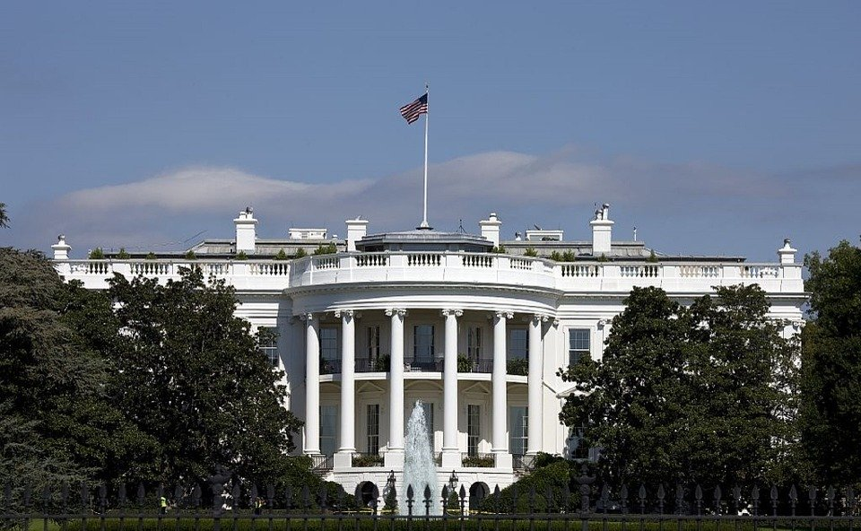

The 2020 Election
With the 2020 election only a few months away, it is important to become educated on how the election works, and who the candidates are. Here are all of the resources you need to become educated this election season.
The Primaries
Primary elections or often just primaries, are the process by which voters can indicate their preference for their party's candidate, or a candidate in general, in an upcoming general election, local election, or by-election, with the goal of narrowing the field of candidates.
Source: Wikipedia

The Electoral College
The Electoral College consists of 538 electors, and an absolute majority of at least 270 electoral votes is required to win the election. Each state's number of electors is equal to the combined total of the state's membership in the Senate and House of Representatives.
Source: Wikipedia

TIMELINE